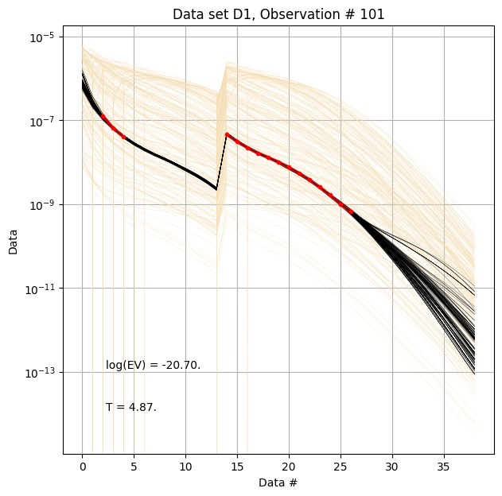
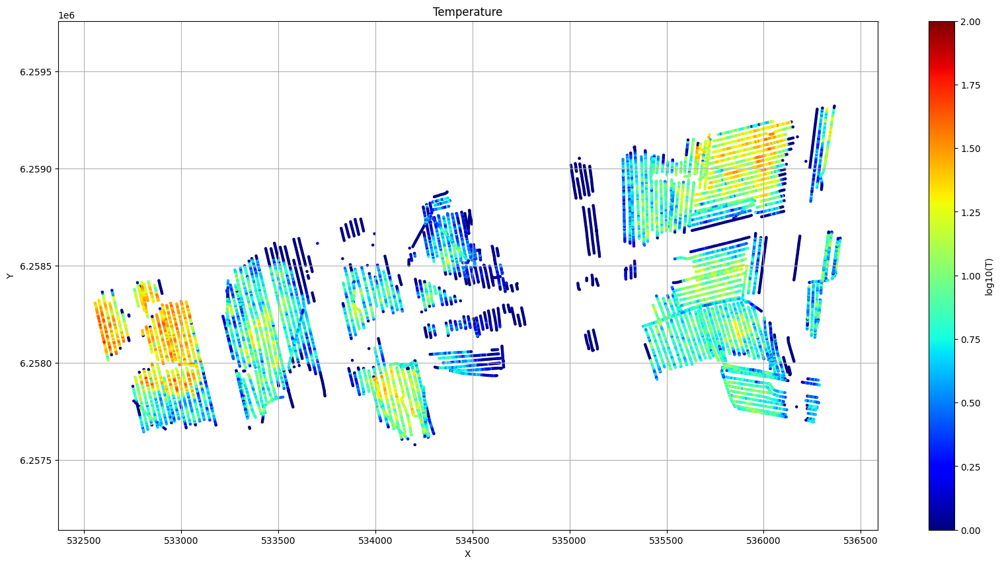
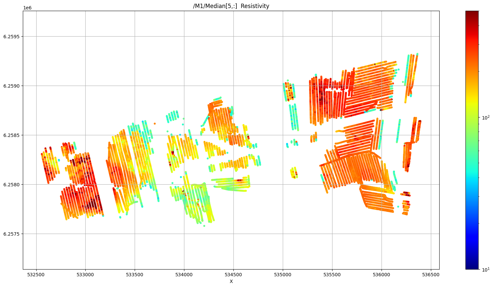

Getting started with INTEGRATE
This notebook contains a simple example of geeting started with INTEGRATE
[1]:
try:
# Check if the code is running in an IPython kernel (which includes Jupyter notebooks)
get_ipython()
# If the above line doesn't raise an error, it means we are in a Jupyter environment
# Execute the magic commands using IPython's run_line_magic function
get_ipython().run_line_magic('load_ext', 'autoreload')
get_ipython().run_line_magic('autoreload', '2')
except:
# If get_ipython() raises an error, we are not in a Jupyter environment
# # # # #%load_ext autoreload
# # # # #%autoreload 2
pass
[2]:
import integrate as ig
# check if parallel computations can be performed*
parallel = ig.use_parallel(showInfo=1)
hardcopy = True
import matplotlib.pyplot as plt
plt.show()
Notebook detected. Parallel processing is OK
[3]:
case = 'DAUGAARD'
case = 'OERUM'
#case = 'HJOELLUND'
files = ig.get_case_data(case=case)
f_data_h5 = files[0]
#file_gex = files[1]
file_gex= ig.get_gex_file_from_data(f_data_h5)
print("Using data file: %s" % f_data_h5)
print("Using GEX file: %s" % file_gex)
Getting data for case: OERUM
--> Got data for case: OERUM
Using data file: OERUM_AVG.h5
Using GEX file: TX07_20240802_2x4_RC20-39.gex
[5]:
# plot the Geometry
ig.plot_geometry(f_data_h5, hardcopy=hardcopy)
# Plot the data
ig.plot_data(f_data_h5, hardcopy=hardcopy)
f_data_h5=OERUM_AVG.h5
plot_data: Found data set D1
plot_data: Using data set D1
1. Setup the prior model (\(\rho(\mathbf{m},\mathbf{d})\)
In this example a simple layered prior model will be considered
1a. first, a sample of the prior model parameters, \(\rho(\mathbf{m})\), will be generated
[5]:
N=100000
# Layered model
f_prior_h5 = ig.prior_model_layered(N=N,lay_dist='chi2', NLAY_deg=4, RHO_min=1, RHO_max=3000)
# Plot some summary statistics of the prior model
ig.plot_prior_stats(f_prior_h5, hardcopy=hardcopy)
1b. Then, a corresponding sample of \(\rho(\mathbf{d})\), will be generated
[6]:
f_prior_data_h5 = ig.prior_data_gaaem(f_prior_h5, file_gex, parallel=parallel, showInfo=0)
ig.plot_data_prior(f_prior_data_h5,f_data_h5,nr=1000,hardcopy=hardcopy)
True
prior_data_gaaem: Using 10 parallel threads.
]
Time elapsed: 22855.5 s, for 1000000 soundings. 22.856 ms/sounding. 43.8it/s
Time elapsed: 16.1 s, for 10000 soundings. 1.612 ms/sounding. 620.3it/s
Sample the posterior \(\sigma(\mathbf{m})\)
The posterior distribution is sampling using the extended rejection sampler.
[7]:
N_use = N
f_post_h5 = ig.integrate_rejection(f_prior_data_h5,
f_data_h5,
N_use = N_use,
showInfo=1,
parallel=parallel)
Loaded data from OERUM_AVG.h5
Data type 1: id_use=1, gaussian, Using 11904/11904 data
Loaded data from OERUM_AVG.h5
Data type 1: id_use=1, gaussian, Using 11904/11904 data
Data type 1: gaussian, Using 11904/11904 data
<--INTEGRATE_REJECTION-->
f_prior_h5=PRIOR_CHI2_NF_4_log-uniform_N1000000_TX07_20240802_2x4_RC20-39_Nh280_Nf12.h5
f_data_h5=OERUM_AVG.h5
f_post_h5=POST_OERUM_AVG_PRIOR_CHI2_NF_4_log-uniform_N1000000_TX07_20240802_2x4_RC20-39_Nh280_Nf12_Nu1000000_aT1.h5
T_av=8.0, Time=7510.5s/11904 soundings ,630.9ms/sounding, 1.6it/s
D1: NOT RECOGNIZED
M1: CONTINUOUS
nm=90, nsounding=11904, nr=400
M_mean.shape=(11904, 90)
Creating /M1/Mean in POST_OERUM_AVG_PRIOR_CHI2_NF_4_log-uniform_N1000000_TX07_20240802_2x4_RC20-39_Nh280_Nf12_Nu1000000_aT1.h5
Creating /M1/Median in POST_OERUM_AVG_PRIOR_CHI2_NF_4_log-uniform_N1000000_TX07_20240802_2x4_RC20-39_Nh280_Nf12_Nu1000000_aT1.h5
Creating /M1/Std in POST_OERUM_AVG_PRIOR_CHI2_NF_4_log-uniform_N1000000_TX07_20240802_2x4_RC20-39_Nh280_Nf12_Nu1000000_aT1.h5
Creating /M1/LogMean in POST_OERUM_AVG_PRIOR_CHI2_NF_4_log-uniform_N1000000_TX07_20240802_2x4_RC20-39_Nh280_Nf12_Nu1000000_aT1.h5
M2: CONTINUOUS
nm=1, nsounding=11904, nr=400
M_mean.shape=(11904, 1)
Creating /M2/Mean in POST_OERUM_AVG_PRIOR_CHI2_NF_4_log-uniform_N1000000_TX07_20240802_2x4_RC20-39_Nh280_Nf12_Nu1000000_aT1.h5
Creating /M2/Median in POST_OERUM_AVG_PRIOR_CHI2_NF_4_log-uniform_N1000000_TX07_20240802_2x4_RC20-39_Nh280_Nf12_Nu1000000_aT1.h5
Creating /M2/Std in POST_OERUM_AVG_PRIOR_CHI2_NF_4_log-uniform_N1000000_TX07_20240802_2x4_RC20-39_Nh280_Nf12_Nu1000000_aT1.h5
Creating /M2/LogMean in POST_OERUM_AVG_PRIOR_CHI2_NF_4_log-uniform_N1000000_TX07_20240802_2x4_RC20-39_Nh280_Nf12_Nu1000000_aT1.h5
All done
T_av=121.0, Time= 17.5s/11693 soundings , 1.5ms/sounding, 667.1it/s
D1: NOT RECOGNIZED
M1: CONTINUOUS
nm=90, nsounding=11693, nr=400
M_mean.shape=(11693, 90)
Creating /M1/Mean in POST_DAUGAARD_AVG_PRIOR_CHI2_NF_3_log-uniform_N10000_TX07_20231016_2x4_RC20-33_Nh280_Nf12_Nu10000_aT1.h5
Creating /M1/Median in POST_DAUGAARD_AVG_PRIOR_CHI2_NF_3_log-uniform_N10000_TX07_20231016_2x4_RC20-33_Nh280_Nf12_Nu10000_aT1.h5
Creating /M1/Std in POST_DAUGAARD_AVG_PRIOR_CHI2_NF_3_log-uniform_N10000_TX07_20231016_2x4_RC20-33_Nh280_Nf12_Nu10000_aT1.h5
Creating /M1/LogMean in POST_DAUGAARD_AVG_PRIOR_CHI2_NF_3_log-uniform_N10000_TX07_20231016_2x4_RC20-33_Nh280_Nf12_Nu10000_aT1.h5
M2: CONTINUOUS
nm=1, nsounding=11693, nr=400
M_mean.shape=(11693, 1)
Creating /M2/Mean in POST_DAUGAARD_AVG_PRIOR_CHI2_NF_3_log-uniform_N10000_TX07_20231016_2x4_RC20-33_Nh280_Nf12_Nu10000_aT1.h5
Creating /M2/Median in POST_DAUGAARD_AVG_PRIOR_CHI2_NF_3_log-uniform_N10000_TX07_20231016_2x4_RC20-33_Nh280_Nf12_Nu10000_aT1.h5
Creating /M2/Std in POST_DAUGAARD_AVG_PRIOR_CHI2_NF_3_log-uniform_N10000_TX07_20231016_2x4_RC20-33_Nh280_Nf12_Nu10000_aT1.h5
Creating /M2/LogMean in POST_DAUGAARD_AVG_PRIOR_CHI2_NF_3_log-uniform_N10000_TX07_20231016_2x4_RC20-33_Nh280_Nf12_Nu10000_aT1.h5
[8]:
# This is typically done after the inversion
# ig.integrate_posterior_stats(f_post_h5)
Plot some statistic from \(\sigma(\mathbf{m})\)
[9]:
ig.plot_data_prior_post(f_post_h5, i_plot=100,hardcopy=hardcopy)
ig.plot_data_prior_post(f_post_h5, i_plot=0,hardcopy=hardcopy)

[10]:
# Plot the Temperature used for inversion
ig.plot_T_EV(f_post_h5, pl='T',hardcopy=hardcopy)
# Plot the evidnence (prior likelihood) estimated as part of inversion
ig.plot_T_EV(f_post_h5, pl='EV',hardcopy=hardcopy)

[11]:
ig.plot_profile(f_post_h5, i1=1, i2=2000, im=1, hardcopy=hardcopy)
[12]:
# Plot a 2D feature: Resistivity in layer 10
try:
ig.plot_feature_2d(f_post_h5,im=1,iz=5, key='Median', uselog=1, cmap='jet', s=10,hardcopy=hardcopy)
plt.show()
except:
pass
try:
ig.plot_feature_2d(f_post_h5,im=1,iz=30, key='Median', uselog=1, cmap='jet', s=10,hardcopy=hardcopy)
plt.show()
except:
pass
try:
ig.plot_feature_2d(f_post_h5,im=1,iz=50, key='Median', uselog=1, cmap='jet', s=10,hardcopy=hardcopy)
plt.show()
except:
pass
try:
# Plot a 2D feature: The number of layers
ig.plot_feature_2d(f_post_h5,im=2,iz=0,key='Median', title_text = 'Number of layers', uselog=0, clim=[1,6], cmap='jet', s=12,hardcopy=hardcopy)
plt.show()
except:
pass

[13]:
f_csv, f_point_csv = ig.post_to_csv(f_post_h5)
Writing to POST_OERUM_AVG_PRIOR_CHI2_NF_4_log-uniform_N1000000_TX07_20240802_2x4_RC20-39_Nh280_Nf12_Nu1000000_aT1_M1.csv
----------------------------------------------------
Creating point data set: Median
Creating point data set: Mean
Creating point data set: Std
- saving to : POST_OERUM_AVG_PRIOR_CHI2_NF_4_log-uniform_N1000000_TX07_20240802_2x4_RC20-39_Nh280_Nf12_Nu1000000_aT1_M1_point.csv
Creating point data set: Std
- saving to : POST_DAUGAARD_AVG_PRIOR_CHI2_NF_3_log-uniform_N10000_TX07_20231016_2x4_RC20-33_Nh280_Nf12_Nu10000_aT1_M1_point.csv
[13]:
'POST_DAUGAARD_AVG_PRIOR_CHI2_NF_3_log-uniform_N10000_TX07_20231016_2x4_RC20-33_Nh280_Nf12_Nu10000_aT1_M1.csv'
[14]:
# Read the CSV file
#f_point_csv = 'POST_DAUGAARD_AVG_PRIOR_CHI2_NF_3_log-uniform_N100000_TX07_20231016_2x4_RC20-33_Nh280_Nf12_Nu100000_aT1_M1_point.csv'
import pandas as pd
df = pd.read_csv(f_point_csv)
df.head()
[14]:
| X | Y | Z | LINE | Median | Mean | Std | |
|---|---|---|---|---|---|---|---|
| 0 | 534203.3 | 6258006.3 | 51.1 | 100.0 | 86.778381 | 163.657379 | 0.316134 |
| 1 | 534203.3 | 6258006.3 | 50.1 | 100.0 | 86.751740 | 155.301346 | 0.293299 |
| 2 | 534203.3 | 6258006.3 | 49.1 | 100.0 | 86.662735 | 152.760101 | 0.287041 |
| 3 | 534203.3 | 6258006.3 | 48.1 | 100.0 | 86.623985 | 143.671173 | 0.264843 |
| 4 | 534203.3 | 6258006.3 | 47.1 | 100.0 | 86.652245 | 144.204666 | 0.262433 |
[26]:
# Use Pyvista to plot X,Y,Z,Median
import pyvista as pv
import numpy as np
from pyvista import examples
#pv.set_jupyter_backend('client')
pv.set_plot_theme("document")
p = pv.Plotter(notebook=True)
p = pv.Plotter()
filtered_df = df[(df['Median'] < 50) | (df['Median'] > 200)]
#filtered_df = df[(df['LINE'] > 1000) & (df['LINE'] < 1400) ]
points = filtered_df[['X', 'Y', 'Z']].values[:]
median = np.log10(filtered_df['Mean'].values[:])
opacity = np.where(filtered_df['Median'].values[:] < 100, 0.5, 1.0)
#p.add_points(points, render_points_as_spheres=True, point_size=3, scalars=median, cmap='jet', opacity=opacity)
p.add_points(points, render_points_as_spheres=True, point_size=6, scalars=median, cmap='hot')
p.show_grid()
p.show()
/Users/au11687/integrate/lib/python3.11/site-packages/pyvista/jupyter/notebook.py:37: UserWarning: Failed to use notebook backend:
cannot import name 'vtk' from 'trame.widgets' (/Users/au11687/integrate/lib/python3.11/site-packages/trame/widgets/__init__.py)
Falling back to a static output.
warnings.warn(
[23]:

[24]:
---------------------------------------------------------------------------
ImportError Traceback (most recent call last)
File ~/integrate/lib/python3.11/site-packages/pyvista/jupyter/__init__.py:46, in _validate_jupyter_backend(backend)
45 try:
---> 46 from pyvista.trame.jupyter import show_trame
47 except ImportError: # pragma: no cover
File ~/integrate/lib/python3.11/site-packages/pyvista/trame/__init__.py:9
7 logging.getLogger('trame.app').disabled = True
----> 9 from pyvista.trame.jupyter import elegantly_launch
10 from pyvista.trame.jupyter import launch_server
File ~/integrate/lib/python3.11/site-packages/pyvista/trame/jupyter.py:11
10 from trame.widgets import html as html_widgets
---> 11 from trame.widgets import vtk as vtk_widgets
12 from trame.widgets import vuetify as vuetify2_widgets
ImportError: cannot import name 'vtk' from 'trame.widgets' (/Users/au11687/integrate/lib/python3.11/site-packages/trame/widgets/__init__.py)
During handling of the above exception, another exception occurred:
ImportError Traceback (most recent call last)
Cell In[24], line 7
5 # Set the plot theme and backend for interactivity
6 pv.set_plot_theme("document")
----> 7 pv.set_jupyter_backend('trame') # Use 'trame' for interactive plotting
9 # Create a Plotter object
10 p = pv.Plotter(notebook=True)
File ~/integrate/lib/python3.11/site-packages/pyvista/jupyter/__init__.py:113, in set_jupyter_backend(backend, name, **kwargs)
55 def set_jupyter_backend(backend, name=None, **kwargs):
56 """Set the plotting backend for a jupyter notebook.
57
58 Parameters
(...)
111
112 """
--> 113 pyvista.global_theme._jupyter_backend = _validate_jupyter_backend(backend)
File ~/integrate/lib/python3.11/site-packages/pyvista/jupyter/__init__.py:48, in _validate_jupyter_backend(backend)
46 from pyvista.trame.jupyter import show_trame
47 except ImportError: # pragma: no cover
---> 48 raise ImportError('Please install `trame` and `ipywidgets` to use this feature.')
50 if backend == 'none':
51 backend = None
ImportError: Please install `trame` and `ipywidgets` to use this feature.
[25]:
# !pip install trame
Requirement already satisfied: trame in /Users/au11687/integrate/lib/python3.11/site-packages (3.7.6)
Requirement already satisfied: trame-server<4,>=3.2.3 in /Users/au11687/integrate/lib/python3.11/site-packages (from trame) (3.3.0)
Requirement already satisfied: trame-client<4,>=3.4 in /Users/au11687/integrate/lib/python3.11/site-packages (from trame) (3.5.2)
Requirement already satisfied: wslink>=2.1.3 in /Users/au11687/integrate/lib/python3.11/site-packages (from trame) (2.2.2)
Requirement already satisfied: more-itertools in /Users/au11687/integrate/lib/python3.11/site-packages (from trame-server<4,>=3.2.3->trame) (10.6.0)
Requirement already satisfied: aiohttp<4 in /Users/au11687/integrate/lib/python3.11/site-packages (from wslink>=2.1.3->trame) (3.11.11)
Requirement already satisfied: msgpack<2,>=1 in /Users/au11687/integrate/lib/python3.11/site-packages (from wslink>=2.1.3->trame) (1.1.0)
Requirement already satisfied: aiohappyeyeballs>=2.3.0 in /Users/au11687/integrate/lib/python3.11/site-packages (from aiohttp<4->wslink>=2.1.3->trame) (2.4.4)
Requirement already satisfied: aiosignal>=1.1.2 in /Users/au11687/integrate/lib/python3.11/site-packages (from aiohttp<4->wslink>=2.1.3->trame) (1.3.2)
Requirement already satisfied: attrs>=17.3.0 in /Users/au11687/integrate/lib/python3.11/site-packages (from aiohttp<4->wslink>=2.1.3->trame) (25.1.0)
Requirement already satisfied: frozenlist>=1.1.1 in /Users/au11687/integrate/lib/python3.11/site-packages (from aiohttp<4->wslink>=2.1.3->trame) (1.5.0)
Requirement already satisfied: multidict<7.0,>=4.5 in /Users/au11687/integrate/lib/python3.11/site-packages (from aiohttp<4->wslink>=2.1.3->trame) (6.1.0)
Requirement already satisfied: propcache>=0.2.0 in /Users/au11687/integrate/lib/python3.11/site-packages (from aiohttp<4->wslink>=2.1.3->trame) (0.2.1)
Requirement already satisfied: yarl<2.0,>=1.17.0 in /Users/au11687/integrate/lib/python3.11/site-packages (from aiohttp<4->wslink>=2.1.3->trame) (1.18.3)
Requirement already satisfied: idna>=2.0 in /Users/au11687/integrate/lib/python3.11/site-packages (from yarl<2.0,>=1.17.0->aiohttp<4->wslink>=2.1.3->trame) (3.10)
[ ]: